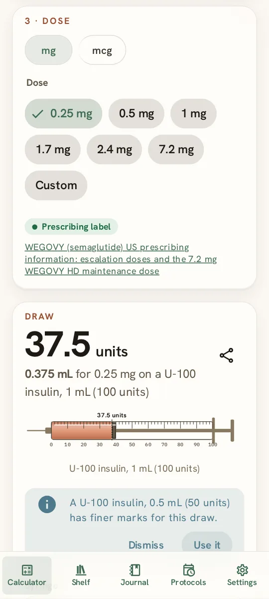
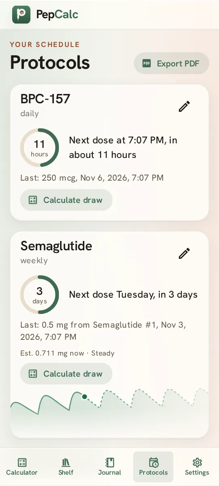
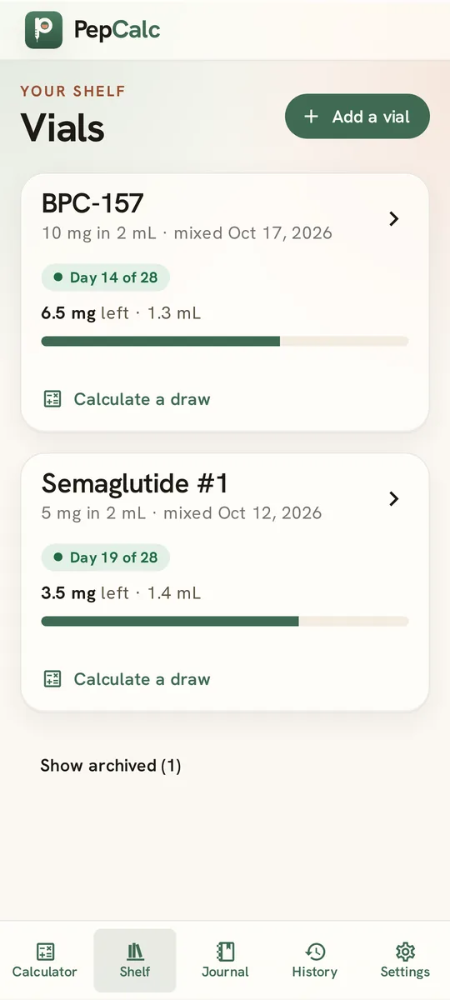

Draw calculator
Enter a dose in mg, mcg, or IU and see the volume and the reading on a U-100 (1, 0.5, or 0.3 mL), U-40, or mL syringe. You'll get a warning if a draw won't fit, is under one mark, or falls between marks.
Free · Private · Offline
Enter what's in your vial and how much water you added. See the concentration and how far to draw on your syringe. Everything stays on your device.


Mixing a vial, drawing from it, and keeping track of what's left.
Enter a dose in mg, mcg, or IU and see the volume and the reading on a U-100 (1, 0.5, or 0.3 mL), U-40, or mL syringe. You'll get a warning if a draw won't fit, is under one mark, or falls between marks.
Enter your vial size and the doses you plan to draw. PepCalc ranks water volumes so every dose fits one syringe and lands on a mark.
Vial sizes, water volumes, and doses for each peptide, each showing where it came from: a prescribing label, a clinical trial, or community reports.
For KLOW, GLOW, or a mix of your own, see how much of each peptide is in every dose.
Save the vials you've mixed and log each draw. See how much is left and how long ago you mixed it.
See an estimate of how much is in your body over time, based on published human data. You can also enter your own half-life.
Reconstitution arithmetic is easy to get wrong on a phone calculator. PepCalc does it for you, shows each step, and draws the syringe so you can check the reading before you draw.

Every result shows how it was worked out. Every reference value shows its source.
No account, no server, and no analytics. PepCalc runs entirely on your device, even offline, and the Android app doesn't request network access.
Your device holds the only copy of your vials, draws, and journal, so save a backup from Settings from time to time.
Semaglutide, tirzepatide, retatrutide, cagrilintide, tesamorelin, BPC-157, TB-500, GHK-Cu, KPV, and the GLOW and KLOW blends, or any peptide you add yourself.
Several of these peptides are investigational or not approved for human use. PepCalc isn't medical advice.
Using a GLP-1 medicine from a pharmacy? Try Gliplog, a free, private journal for doses, weight, blood sugar, and side effects.
Open pepcalc.github.io/app on your phone or tablet, then add it to your Home Screen. It opens full screen and works offline.
| Phone or tablet | Steps |
|---|---|
| iPhone or iPad, Safari | Share, then Add to Home Screen |
| iPhone or iPad, Chrome | Share (in the address bar), then Add to Home Screen |
| Android, Chrome or Edge | Menu, then Install app (or Add to Home screen) |
| Android, Firefox | Menu, then Add app to Home screen |
An Android app for F-Droid is coming, built from the same open source code.
PepCalc won't tell you what to use. It shows what each amount of water does: the concentration, and how many units each draw takes on your syringe, so you can pick a volume that's easy to measure. The mixing advisor ranks volumes for the doses you plan.
Divide the amount by the concentration to get millilitres, then multiply by 100 for a U-100 syringe (or by 40 for U-40). A 10 mg vial with 2 mL of water is 5 mg per mL, and 0.1 mL of it is 10 units on a U-100 syringe.
Yes. No subscription, no ads, and no premium tier. With no server, it costs almost nothing to run.
On your device: in your browser's storage, or inside the Android app. Nothing is sent anywhere. Clearing this site's data or uninstalling the app deletes it, so keep a backup.
It moved to pepcalc.github.io/app, on the same site, so your vials, draws, and journal are still there. A Home Screen icon you added before the move keeps working: it opens this page, and Open app takes you to your data. On iPhone and iPad, a new icon starts empty, so if you add one, save a backup in the old icon first and restore it in the new one.
Save a backup in Settings, move the file to the new phone, and restore it there. On iPhone, Safari and the home-screen app keep separate data, so use a backup to move between them too.
No. It does the arithmetic and shows reference values with their sources.